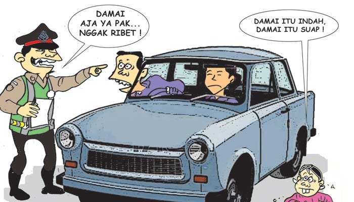
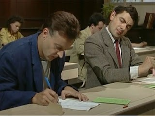

PERILAKU KORUPTIF DALAM KEHIDUPAN SEHARI-HARI
Oleh: Faza Azhariyanto / 13113138
Sering kita mendengar kasus korupsi yang merugikan negara sebesar ratusan juta hingga miliaran rupiah. Tentu saja timbul perasaan geram terhadap pelaku korupsi tersebut. Akan tetapi, apakah kita juga sudah terbebas dari perilaku koruptif. Berikut adalah 5 perilaku koruptif yang sadar maupun tidak, (mungkin) pernah kita alami
-
Terlambat
Sumber gambar: https://www.google.co.id/search?q=terlambat&espv=2&source=lnms&tbm=isch&sa=X&ved=0ahUKEwjY7YHK2L3TAhWItI8KHVGnBh8Q_AUIBigB&biw=619&bih=584#imgrc=UOShYJyQgWXtcM:
Entah dengan alasan apapun, perilaku terlambat ini merupakan salah satu perilaku koruptif yaitu korupsi waktu. Hal ini berlaku untuk siapa saja baik itu murid, guru, mahasiswa, karyawan hingga dosen. Jika terus dibiasakan, maka hal tersebut akan menjadi kebiasaan yang akan berdampak buruk pada karakter orang tersebut.
-
Menyuap

Sumber gambar: https://www.google.co.id/search?q=terlambat&espv=2&source=lnms&tbm=isch&sa=X&ved=0ahUKEwiBkbOUzb3TAhUINY8KHX1ACx4Q_AUIBigB&biw=619&bih=584#tbm=isch&q=tilang+damai&imgrc=nhU7YYDYVu1yQM:
Contoh perilaku suap yang sering ditemui adalah damai saat tilang, pemberian uang pelicin agar urusan perizinan lebih cepat hingga pemberian hadiah kepada orang dalam agar mendapat pelayanan lebih.
-
Menyontek

Sumber gambar: https://noviyantibioman12.files.wordpress.com/2013/09/f87cd-mr2bbeen2bnyontek.jpg?w=640
Perilaku ini umumnya dilakukan oleh para pelajar maupun mahasiswa. Biasanya dilakukan karena kurangnya rasa percaya diri dan adanya kesempatan karena pengawasan yang kurang ketat.
-
Kembalian tidak sesuai
Perilaku ini sering ditemui di minimarket yang sering mengganti uang kembalian dengan permen. Selain itu sering juga ditemui pada SPBU yang melakukan pembulatan yang terlalu jauh keatas -
Mark-up

Sumber gambar: http://www.gold-eagle.org/gold-eagle-prices.php
Biasanya banyak dilakukan pada kegiatan kepanitian atau proyek yang mana biaya yang diajukan diawal lebih besar daripada biaya yang terpakai
5 Perilaku yang telah disebutkan diatas tanpa disadari telah banyak terjadi di lingkungan sekitar kita. Oleh karena itu, upaya pemberantasan korupsi bukan hanya dilakukan oleh KPK dan pemerintah saja. Kita sebagai masyarakat juga memiliki peran dalam pemberantasan korupsi. Jika perilaku koruptif kecil diatas masih dilakukan, maka akan tumbuh menjadi karakter dan akan berbahaya jika memiliki kekuasaan yang lebih besar.
Daftar pustaka